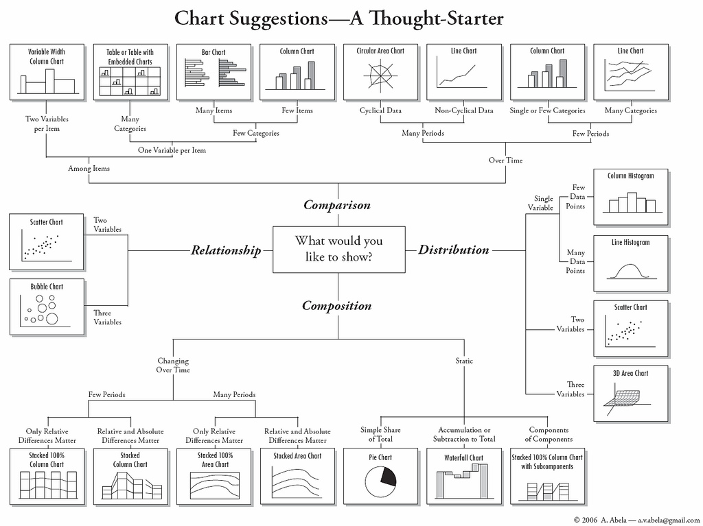

Visualising Information
Data Journalism Workshop
Petr Kočí [@tocit] Marcel Šulek [@veproza]

Prague, February 21 - 23, 2014
This presentation
http://ddj.pribehy.cz/prague
Slides from Vilnius
http://ddj.pribehy.cz/vilnius
Our plan
Friday
- Why visualise data, brief history of data visualisation
- How we think about visualisation, best and worst practices, learning from mistakes
- Demo: Two examples of our day-to-day news visualisations - How and why did we make these?
Saturday
- Hands-on: Free tools for data visualisation: Google Charts, Google Fusion Tables, Datawrapper, infogr.am, Wordle, Timeline.js, Timeline Setter
- “Program or be programmed”: Disadvantages of free tools
- Hands-on: Visualising Data with R and R Studio
- Interactive Data Visualisation for the Web: Technology Fundamentals: HTML, CSS, JavaScript, SVG, D3.js
- Hands-on: Let's make a simple chart with D3.js
Sunday
- Creating news maps for print and the web
- Hands-on: Free tools for on-line mapping_ Google Fusion Tables, QGIS, Google Geochart API
- Hands-on: Let's make a map with D3.js
- Workshop: Let's visualise together some data that matters to you and your readers!
It's not set in stone. Let's improvise and get our hands dirty with data!
Our Data Toolbox
Please download and install
- Google Chrome
- Plain text editor (eg. Sublime Text)
- R
- R Studio
- QGIS
- If you don't have one, create a free Google account
Optional
Why visualise data?
"Data is structured information with potential for meaning."
Visualisations help us discover the meaning, understand it and communicate to others.
Raw data
Visualisation
History of Data Visualisation
John Snow
Cholera Map of London

Parking map of Prague
London Underground Map 1932
London Underground Map 1933
Minard's Map of Napoleon March

Edward Tufte's Principles of Visualisation
- The representation of numbers, as physically measured on the surface of the graph itself, should be directly proportional to the numerical quantities represented.
- Clear, detailed and thorough labeling should be used to defeat graphical distortion and ambiguity. Write out explanations of the data on the graph itself. Label important events in the data.
- Show data variation, not design variation.
- In time-series displays of money, deflated and standardized units of monetary measurement are nearly always better than nominal units.
- The number of information carrying (variable) dimensions depicted should not exceed the number of dimensions in the data. Graphics must not quote data out of context.
Edward Tufte's Data/Ink Ratio
- Above all else show data.
- Maximize the data-ink ratio.
- Erase non-data-ink.
- Erase redundant data-ink.
- Revise and edit.
Interactive Visualisations Principle
- Overview
- Zoom
- Explore
Overview - Zoom - Explore Example
Choose the Right Chart Type

The Problem with Pie Charts

A Good Use of Pie Chart
Less Common Chart Types Worth Considering
Sanity Check!